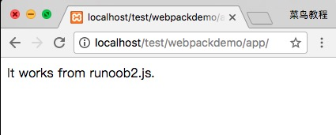
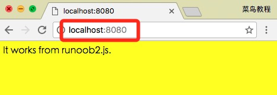

Webpack 是一个前端资源加载/打包工具。它将根据模块的依赖关系进行静态分析，然后将这些模块按照指定的规则生成对应的静态资源。
本章节基于 Webpack3.0 测试通过。

从图中我们可以看出，Webpack 可以将多种静态资源 js、css、less 转换成一个静态文件，减少了页面的请求。
接下来我们简单为大家介绍 Webpack 的安装与使用。
安装 Webpack
在安装 Webpack 前，你本地环境需要支持 node.js。
由于 npm 安装速度慢，本教程使用了淘宝的镜像及其命令 cnpm，安装使用介绍参照：使用淘宝 NPM 镜像。
使用 cnpm 安装 webpack：
创建项目
接下来我们创建一个目录 app：
在 app 目录下添加 runoob1.js 文件，代码如下：
app/runoob1.js 文件
在 app 目录下添加 index.html 文件，代码如下：
app/index.html 文件
接下来我们使用 webpack 命令来打包：
执行以上命令会编译 runoob1.js 文件并生成bundle.js 文件，成功后输出信息如下所示：
Hash: a41c6217554e666594cb
Version: webpack 1.12.13
Time: 50ms
Asset Size Chunks Chunk Names
bundle.js 1.42 kB 0 [emitted] main
[0] ./runoob1.js 29 bytes {0} [built]
在浏览器中打开 index.html，输出结果如下：

创建第二个 JS 文件
接下来我们创建另外一个 js 文件 runoob2.js，代码如下所示：
app/runoob2.js 文件
更新 runoob1.js 文件，代码如下：
app/runoob1.js 文件
接下来我们使用 webpack 命令来打包：
在浏览器访问，输出结果如下所示：

webpack 根据模块的依赖关系进行静态分析，这些文件(模块)会被包含到 bundle.js 文件中。Webpack 会给每个模块分配一个唯一的 id 并通过这个 id 索引和访问模块。 在页面启动时，会先执行 runoob1.js 中的代码，其它模块会在运行 require 的时候再执行。
LOADER
Webpack 本身只能处理 JavaScript 模块，如果要处理其他类型的文件，就需要使用 loader 进行转换。
所以如果我们需要在应用中添加 css 文件，就需要使用到 css-loader 和 style-loader，他们做两件不同的事情，css-loader 会遍历 CSS 文件，然后找到 url() 表达式然后处理他们，style-loader 会把原来的 CSS 代码插入页面中的一个 style 标签中。
接下来我们使用以下命令来安装 css-loader 和 style-loader(全局安装需要参数 -g)。
执行以上命令后，会再当前目录生成 node_modules 目录，它就是 css-loader 和 style-loader 的安装目录。
接下来创建一个 style.css 文件，代码如下：
app/style.css 文件
修改 runoob1.js 文件，代码如下：
app/runoob1.js 文件
接下来我们使用 webpack 命令来打包：
在浏览器访问，输出结果如下所示：

require CSS 文件的时候都要写 loader 前缀 !style-loader!css-loader!，当然我们可以根据模块类型（扩展名）来自动绑定需要的 loader。 将 runoob1.js 中的 require("!style-loader!css-loader!./style.css") 修改为 require("./style.css") ：
app/runoob1.js 文件
然后执行：
在浏览器访问，输出结果如下所示：
显然，这两种使用 loader 的方式，效果是一样的。
配置文件
我们可以将一些编译选项放在配置文件中，以便于统一管理：
创建 webpack.config.js 文件，代码如下所示：
app/webpack.config.js 文件
接下来我们只需要执行 webpack 命令即可生成 bundle.js 文件：
webpack 命令执行后，会默认载入当前目录的 webpack.config.js 文件。
插件
插件在 webpack 的配置信息 plugins 选项中指定，用于完成一些 loader 不能完成的工作。
webpack 自带一些插件，你可以通过 cnpm 安装一些插件。
使用内置插件需要通过以下命令来安装：
比如我们可以安装内置的 BannerPlugin 插件，用于在文件头部输出一些注释信息。
修改 webpack.config.js，代码如下：
app/webpack.config.js 文件
然后运行:
webpack
打开 bundle.js，可以看到文件头部出现了我们指定的注释信息。
开发环境
当项目逐渐变大，webpack 的编译时间会变长，可以通过参数让编译的输出内容带有进度和颜色。
如果不想每次修改模块后都重新编译，那么可以启动监听模式。开启监听模式后，没有变化的模块会在编译后缓存到内存中，而不会每次都被重新编译，所以监听模式的整体速度是很快的。
当然，我们可以使用 webpack-dev-server 开发服务，这样我们就能通过 localhost:8080 启动一个 express 静态资源 web 服务器，并且会以监听模式自动运行 webpack，在浏览器打开 http://localhost:8080/ 或 http://localhost:8080/webpack-dev-server/ 可以浏览项目中的页面和编译后的资源输出，并且通过一个 socket.io 服务实时监听它们的变化并自动刷新页面。
在浏览器打开 http://localhost:8080/ 输出结果如下：
